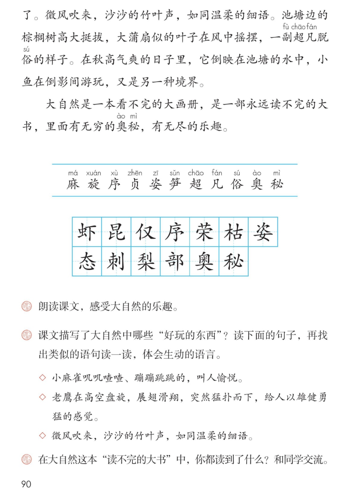

×
🔊 手机听不到声音怎么办？
① 先把手机
媒体音量调大 ，确认没开静音、没连蓝牙耳机；在微信里打开的，点右上角「⋯ → 用浏览器打开」。
② 还是没声音？到应用商店免费下载
Microsoft Edge 浏览器 （它自带朗读发声），用它打开本页面就能出声。
③ 换了 Edge 仍然没声音，说明这部手机的
硬件/系统不支持 网页朗读（多为老旧机型）；近几年买的新手机一般都能正常播放。
→ 打开声音自检
📚 第 22 课《读不完的大书》· 有声图文带读
统编版语文 · 第七单元·阅读 · 课本 P89~90 · 朱维之 · 素养升级版（对标 2022 课标第二学段）
课文 6 个自然段
素养目标 4
会认字 11
会写字 13
听写词 12
生动语言探究 6 卡
深入理解 8 题
🎧 这样学（可随时点任意一句、一个字、一个词单独听）： ① 听读课文 ——一句一句读，读到哪一句哪一句发光；边读边想：作者在大书里读到了哪些好玩的东西？哪些语句特别生动？② 学字词 ——11 个会认字、13 个会写字，点一个读一个。③ 词语·听写 ——听写 12 个词（读两遍→你写→报答案→听示范句），再听 4 组近义词辨析。④ 深入理解 ——8 道题（认知 / 理解 / 运用 / 拓展），先想后看。⑤ 大自然读书会 ——按总起→动物→植物→果树→总结的顺序理一理，再听几位"读书人"分角色朗读。🌟 本单元任务：感受课文生动的语言，积累喜欢的语句；留心生活，把自己的想法记录下来！
📌 本单元语文要素 ——单元导语（P83 照录）：大自然赐给我们许多珍贵的礼物，你发现了吗？ ；要点：感受课文生动的语言，积累喜欢的语句 ；留心生活，把自己的想法记录下来 。
🀄 文化自信
🀄 文化自信
跟作者一起读大自然这本大书——汉字把万物写得又美又活，感受祖国语言文字的魅力。
🗣 语言运用
🗣 语言运用
认识 11 个生字，会写 13 个字；积累井然有序、千姿百态、超凡脱俗等词语和叠词、连续动词、比喻句。
💡 思维能力
💡 思维能力
理清总—分—总的结构，说说课文写了大自然中哪些好玩的东西；能找出类似的语句，体会生动的语言。
🎨 审美创造
🎨 审美创造
有感情地朗读课文，想象大画册一样的画面；学课文的样子，写一写你在大自然里读到的乐趣。
点段前的 ①②③ 听整段
🔁 跟读模式：关
👁 隐藏注音（自测用）
字卡上的拼音标的是本课要认的字，读音来自课本生字表
🎤 朗读要求（老师标准） 不添字、不漏字 ；有感情地朗读课文，感受大自然的乐趣 （课后题①）：叠词读得轻快活泼 ，连续动词读出节奏 ，比喻句读得轻柔 ；饱满有力 ；生动的语句画下来 ，准备和同学交流。
🤫 默读小提示（带着读书任务默读） 听读 ——点句子听老师读；第二步 默读 ——不出声、不指读，一边读一边想：作者在大书里读到了哪些好玩的东西？哪些语句特别生动？ 把它们画下来；第三步 朗读 ——有感情地朗读课文，感受大自然的乐趣 （课后题①）。
①
我五六岁时，就喜欢到大自然中去寻找好玩的东西。
高远的天空，广阔的大地，空中的浮云飞鸟，水里的虾蟹游鱼，地上的走兽昆虫、花草树木……世界万物，不仅好玩，还让人沉思和遐想。
📌 这一段讲：总起：我喜欢到大自然中寻找好玩的东西——世界万物不仅好玩，还让人沉思和遐想。
②
小麻雀叽叽喳喳、蹦蹦跳跳的，叫人愉悦。
老鹰在高空盘旋，展翅滑翔，突然猛扑而下，给人以雄健勇猛的感觉。
蚂蚁搬家，井然有序，当两军对垒时，那勇敢忠贞的精神，真叫人敬佩。
📌 这一段讲：动物的趣味：小麻雀叽叽喳喳叫人愉悦，老鹰雄健勇猛，蚂蚁勇敢忠贞叫人敬佩。
③
植物的开花、结籽，暑寒荣枯，有着不同的趣味。
花儿有红的、黄的、紫的、蓝的，有单瓣的、重瓣的，千姿百态。
草的叶子各不相同，有长有短，有宽有窄，有的还带着刺。
📌 这一段讲：植物的趣味：开花结籽、暑寒荣枯；花儿千姿百态，草的叶子各不相同，有的还带着刺。
④
我家房子前后栽有各种果树，有梨树、桃树、橘子树、柚子树，在不同的时间里，它们开不同的花，结不同的果。
刚从树上摘下的果子，味道格外鲜美。
📌 这一段讲：果树的趣味：梨树、桃树、橘子树、柚子树开不同的花、结不同的果，刚摘的果子味道格外鲜美。
⑤
我最喜爱的，是我家屋后的两丛竹子和一株棕榈。
竹子长得快，雨后春笋，一天长几寸，没几天就长得和我一样高了。
微风吹来，沙沙的竹叶声，如同温柔的细语。
棕榈树高大挺拔，大蒲扇似的叶子在风中摇摆，一副超凡脱俗的样子。
在秋高气爽的日子里，它倒映在池塘的水中，小鱼在倒影间游玩，又是另一种境界。
📌 这一段讲：竹子和棕榈最令人喜爱：雨后春笋长得快，沙沙竹叶声像温柔细语；棕榈高大挺拔超凡脱俗，倒映水中是另一种境界。
⑥
大自然是一本看不完的大画册，是一部永远读不完的大书，里面有无穷的奥秘，有无尽的乐趣。
📌 这一段讲：总结：大自然是一本看不完的大画册、一部读不完的大书，有无穷的奥秘和无尽的乐趣。
🤔 想一想（点我可跳过）
双页宽图自动占整行

第 90 页 · 认字写字与课后练习
📖 人教版《语文》三年级上册 · 课本第 89~90 页 · 图片仅供个人学习，版权归人民教育出版社所有
📚 注释① 本文作者朱维之（1905—1999），选作课文时有改动。
点一个字，听读音、词语和在课文里的句子
结构、部首、笔画与书写提示为通用规范，供参考，以教材和老师的指导为准
虾xiā
虾蟹
左右 · 虫 · 9画
虫字旁写窄，右边的下字横要长，竖要正，点不能丢。
昆kūn
昆虫
上下 · 日 · 8画
上面日字写扁，下面比字左边小右边大，竖弯钩要舒展。
仅jǐn
不仅
左右 · 亻 · 4画
单人旁竖要直，右边又字撇捺舒展，横撇要短。
序xù
井然有序
半包围 · 广 · 7画
广字头撇要舒展，里面的予字横钩要写得有力，最后一笔竖钩正中。
荣róng
荣枯
上下 · 艹 · 9画
草字头写扁，下面的冖盖住木字，木字横长竖正，撇捺舒展。
枯kū
荣枯
左右 · 木 · 9画
木字旁的捺变成点，右边的古字横长竖正，口字写扁。
姿zī
千姿百态
上下 · 女 · 9画
上面的次字写紧凑，女字横要长，托住上部，撇点要舒展。
态tài
千姿百态
上下 · 心 · 8画
上面的太字要写紧凑，捺画舒展，下面的心字要写得宽而稳。
刺cì
带着刺
左右 · 刂 · 8画
左边是朿不是束，竖画要正，立刀旁短横位置偏上，竖钩有力。
梨lí
梨树
上下 · 木 · 11画
上面的利字左右紧凑，下面的木字横长竖正，撇捺要托住上部。
部bù
两部
左右 · 阝 · 10画
左边的咅字上下紧凑，右耳旁竖要直，横撇弯钩要写得小巧。
奥ào
奥秘
上下 · 大 · 12画
上面的部件要写得紧凑，撇点穿插匀称，下面的大字撇捺要舒展托底。
秘mì
奥秘
左右 · 禾 · 10画
禾字旁的捺变成点，右边的必字卧钩要有力，三个点的位置要匀。
点一行，听读这一组词语
麻 麻雀 芝麻 麻烦
姿 千姿百态 姿势 舞姿
奥 奥秘 深奥 奥妙
梨 梨树 梨花 鸭梨
读两遍 → 你在纸上写 → 报答案 → 听示范句
准备听写 · 共 12 个词
○ ○ ○
点下面的「开始听写」，听到一个词就写一个词。
▶ 开始听写
🔁 再读一遍
👁 看答案
点词听读，点句子听示范句，再自己说一句
1 虾蟹 课文词
示范句：水里的虾蟹游鱼，都很好玩。
✏️ 我也能说：水里有什么在游。
2 昆虫 课文词
示范句：地上的走兽昆虫、花草树木。
✏️ 我也能说：地上的走兽和什么。
3 不仅 课文词
示范句：世界万物，不仅好玩，还让人沉思和遐想。
✏️ 我也能说：不仅怎么样，还怎么样。
4 井然有序 课文词
示范句：蚂蚁搬家，井然有序。
✏️ 我也能说：蚂蚁搬家怎么样。
5 荣枯 课文词
示范句：植物的开花、结籽，暑寒荣枯。
✏️ 我也能说：暑寒怎么样。
6 千姿百态 课文词
示范句：花儿有红的、黄的、紫的、蓝的，千姿百态。
✏️ 我也能说：花儿怎么样。
7 带刺 课文词
示范句：草的叶子有的还带着刺。
✏️ 我也能说：有的叶子怎么样。
8 梨树 课文词
示范句：我家房子前后栽有梨树、桃树。
✏️ 我也能说：栽有什么树。
9 部队 课文词
示范句：蚂蚁两军对垒，像两支整齐的部队。
✏️ 我也能说：像两支怎样的部队。
10 深奥 课文词
示范句：大自然这本书里藏着深奥的知识。
✏️ 我也能说：藏着怎样的知识。
11 奥秘 课文词
示范句：里面有无穷的奥秘。
✏️ 我也能说：有什么样的奥秘。
12 遐想 课文词
示范句：世界万物，不仅好玩，还让人沉思和遐想。
✏️ 我也能说：让人沉思和什么。
相同点 / 不一样在哪 / 各造一句
愉悦 — 愉快
相同：都表示心里高兴、舒服。
不一样：愉悦 是书面语，多形容心情美好；愉快 更口语，用得广。
愉悦：小麻雀叽叽喳喳、蹦蹦跳跳的，叫人愉悦。
雄健 — 强健
相同：都表示有力、不软弱。
不一样：雄健 偏重雄壮有力，多形容气势、动作；强健 偏重身体结实强壮。
雄健：老鹰给人以雄健勇猛的感觉。
敬佩 — 佩服
相同：都表示敬重、心服。
不一样：敬佩 里带着敬重，程度更深；佩服 偏重觉得对方了不起。
敬佩：蚂蚁勇敢忠贞的精神，真叫人敬佩。
格外 — 特别
相同：都表示超出一般。
不一样：格外 多修饰形容词，表示程度更进一步；特别 还可表示与众不同。
格外：刚从树上摘下的果子，味道格外鲜美。
前两行正是课后题②的生动语句
课后题②的生动语句 小麻雀叽叽喳喳、蹦蹦跳跳的，叫人愉悦
老鹰的动作链 盘旋 展翅滑翔 猛扑而下——连续动词写出英姿
竹叶声的比喻 沙沙的竹叶声，如同温柔的细语
课文里的四字词语 井然有序 勇敢忠贞 千姿百态 雨后春笋 超凡脱俗 秋高气爽
点一张卡，听这条阅读线索
上一课我们听了大自然音乐会，这一课再翻一翻大自然这本大书 ——六张卡片，看看生动的语言藏在哪儿。
🐦 叠词让小麻雀活了
叽叽喳喳、蹦蹦跳跳——两个叠词一连用，小麻雀又吵又跳的样子就在眼前，这样的词抄进积累本。
🦅 连续动词写出英姿
盘旋、展翅滑翔、猛扑而下——三个动作一环扣一环，老鹰又稳又猛；写作文也可以让动作连起来。
🍃 比喻把声音写温柔
沙沙的竹叶声，如同温柔的细语——把竹叶声比作细语，声音一下子就柔美了；和第21课的比喻句对照着读。
🌈 排比像翻画册
高远的天空，广阔的大地，空中的浮云飞鸟……一样一样排着队写，大自然就摊开在我们眼前。
🌟 四字词语添文采
井然有序、勇敢忠贞、千姿百态、超凡脱俗——课文里藏着这么多四字词语，找出你喜欢的抄下来。
📖 总结句点题目
大自然是一本看不完的大画册、一部读不完的大书——把大自然比作大书，题目就从这里来，首尾呼应。
标「答案不唯一」的题，说得有道理都对
认知 课文描写了大自然中哪些好玩的东西？（课后题②前半）看解析
🤔 想一想
解析：
动物——小麻雀、老鹰、蚂蚁；植物——开花结籽的花草、带刺的草叶；果树——梨树、桃树、橘子树、柚子树；竹子和棕榈。🌈 按段落顺序一段一段找，一条不落。
🌈 答案不唯一，说得有道理都对
认知 为什么说大自然是一本读不完的大书？看解析
🤔 想一想
解析：
因为大自然里有无穷的奥秘、无尽的乐趣：动物各有各的可爱，植物四季不同，果树花果不断——越读越有趣，永远读不完。🌈 说出自己的理解、举课文里的例子都对。
🌈 答案不唯一，说得有道理都对
理解 小麻雀叽叽喳喳、蹦蹦跳跳的，叫人愉悦。——这样写生动在哪里？（课后题②菱形句一）看解析
🤔 想一想
解析：
叽叽喳喳写声音，蹦蹦跳跳写动作，叠词一用，小麻雀活泼可爱的样子就出来了，读着也欢快。🌈 说出叠词、说出画面感都对。
🌈 答案不唯一，说得有道理都对
理解 老鹰在高空盘旋，展翅滑翔，突然猛扑而下。——连着的几个动词好在哪里？（课后题②菱形句二）看解析
🤔 想一想
解析：
盘旋、展翅滑翔写老鹰飞得又稳又自在，猛扑而下突然一转写又快又猛——一张一弛，雄健勇猛的感觉全出来了。🌈 能说出动作变化就算答对。
🌈 答案不唯一，说得有道理都对
理解 读下面的句子，再找出类似的语句读一读，体会生动的语言。（课后题②照录）◇ 小麻雀叽叽喳喳、蹦蹦跳跳的，叫人愉悦。◇ 老鹰在高空盘旋，展翅滑翔，突然猛扑而下，给人以雄健勇猛的感觉。◇ 微风吹来，沙沙的竹叶声，如同温柔的细语。看解析
🤔 想一想
解析：
类似的语句如：花儿有红的、黄的、紫的、蓝的，千姿百态（排比）；大蒲扇似的叶子在风中摇摆（比喻）；小鱼在倒影间游玩，又是另一种境界（画面感）。🌈 找出句子、说出它生动在哪里就很好。
🌈 答案不唯一，说得有道理都对
运用 在大自然这本读不完的大书中，你都读到了什么？和同学交流。（课后题③照录）看解析
🤔 想一想
解析：
写作支架：第一步，学课文按类别说——动物、植物、果子、 trees and ponds 都可以；第二步，用上叠词、连续动词或比喻，让句子活起来；第三步，说清楚它好玩在哪里；第四步，把最想说的一条写成一段话。🌈 例：池塘边的小青蛙……公园里的菊花……
🌈 答案不唯一，说得有道理都对
运用 把你觉得生动的语句抄进积累本，再说说打算怎么积累。看解析
🤔 想一想
解析：
示范：抄写叽叽喳喳、蹦蹦跳跳（叠词组）+ 盘旋、展翅滑翔、猛扑而下（动作组）+ 沙沙的竹叶声如同温柔的细语（比喻句）。积累方法：分类抄、经常读、写作文时用一用。🌈 抄哪几句都可以，说出理由更好。
🌈 答案不唯一，说得有道理都对
拓展 课文为什么用读不完的大书做题目？结合课文说说你的理解。看解析
🤔 想一想
解析：
因为大自然像一本大书：内容丰富（万物好玩）、永远读不完（无穷奥秘、无尽乐趣），而且让人沉思和遐想——题目把大自然比作大书，既是总结又是吸引我们继续去读。🌈 答案不唯一，结合课文有道理都对。
🌈 答案不唯一，说得有道理都对
💬 结构支架：总起 好玩的东西 → 动物 （麻雀/老鹰/蚂蚁）→ 植物 （花草）→ 果树 → 竹子棕榈 → 总结 读不完的大书。轮到你了：闭上眼睛，把这本大书里你最喜欢的一页讲给家人听。
点一个角色，听他（她）的台词
🎭 旁白
我五六岁时，就喜欢到大自然中去寻找好玩的东西。 / 大自然是一本看不完的大画册，是一部永远读不完的大书，里面有无穷的奥秘，有无尽的乐趣。
💬 演员要读出读书会的味道 ：叠词轻快，动词有节奏，总结句饱满有力
🎭 小动物迷
小麻雀叽叽喳喳、蹦蹦跳跳的，叫人愉悦。 / 老鹰在高空盘旋，展翅滑翔，突然猛扑而下，给人以雄健勇猛的感觉。 / 蚂蚁搬家，井然有序，当两军对垒时，那勇敢忠贞的精神，真叫人敬佩。
💬 演员要读出读书会的味道 ：叠词轻快，动词有节奏，总结句饱满有力
🎭 植物讲解员
植物的开花、结籽，暑寒荣枯，有着不同的趣味。 / 花儿有红的、黄的、紫的、蓝的，有单瓣的、重瓣的，千姿百态。 / 草的叶子各不相同，有长有短，有宽有窄，有的还带着刺。
💬 演员要读出读书会的味道 ：叠词轻快，动词有节奏，总结句饱满有力
🎭 果园观察员
我家房子前后栽有各种果树，有梨树、桃树、橘子树、柚子树，在不同的时间里，它们开不同的花，结不同的果。 / 刚从树上摘下的果子，味道格外鲜美。 / 我最喜爱的，是我家屋后的两丛竹子和一株棕榈。 / 竹子长得快，雨后春笋，一天长几寸，没几天就长得和我一样高了。 / 微风吹来，沙沙的竹叶声，如同温柔的细语。 / 棕榈树高大挺拔，大蒲扇似的叶子在风中摇摆，一副超凡脱俗的样子。 / 在秋高气爽的日子里，它倒映在池塘的水中，小鱼在倒影间游玩，又是另一种境界。
💬 演员要读出读书会的味道 ：叠词轻快，动词有节奏，总结句饱满有力
🎭 小诗人
朗读小窍门：叠词读得轻快活泼，连续动词读出节奏，比喻句读得轻柔；总结句看不完、读不完、无穷、无尽读得饱满有力，首尾呼应。
💬 演员要读出读书会的味道 ：叠词轻快，动词有节奏，总结句饱满有力
每题给自己打 1~3 颗星
1. 我能正确认读 11 个会认字，规范书写 13 个会写字。 ☆ ☆ ☆
2. 我能有感情地朗读课文，读出叠词、动词和比喻句的味道。 ☆ ☆ ☆
3. 我能按顺序说出课文写了大自然中哪些好玩的东西。 ☆ ☆ ☆
4. 我能找出觉得生动的语句，说说它好在哪里，并抄进积累本。 ☆ ☆ ☆
5. 我能学课文的样子，说一说、写一写我在大自然里读到的乐趣。 ☆ ☆ ☆
✍️ 交流 ：在大自然这本读不完的大书 中，你都读到了什么？和同学交流。按类别说 ——动物、植物、果树、池塘……都可以；叠词、连续动词或比喻 ，让句子活起来；好玩在哪里 ；